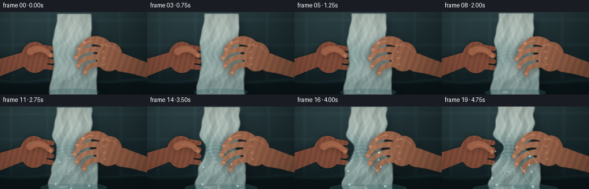
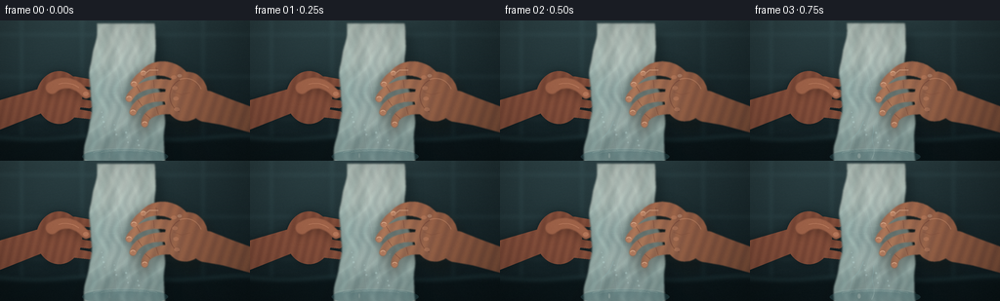
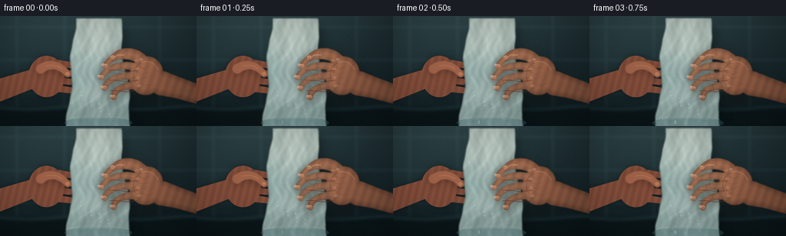
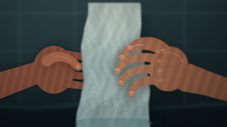
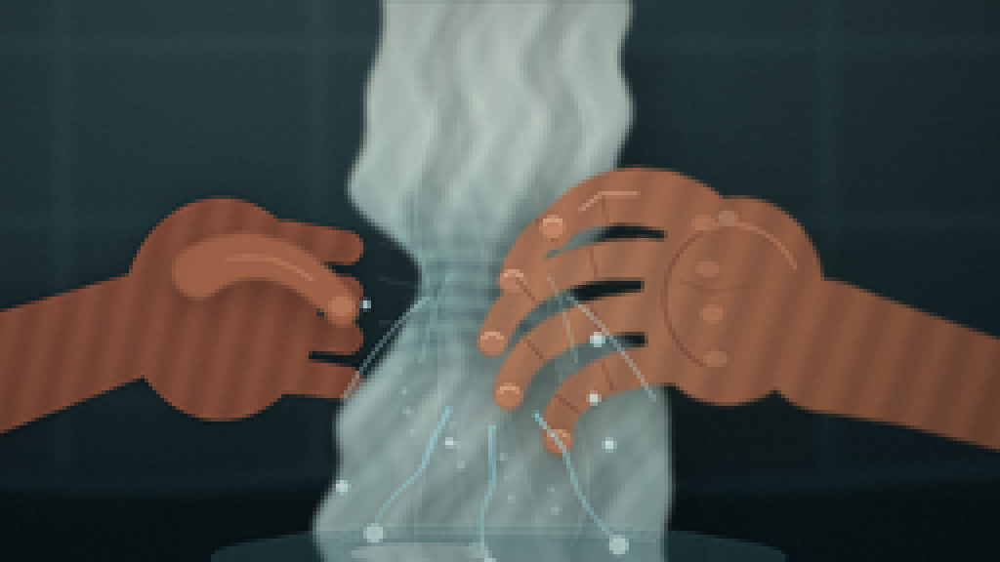
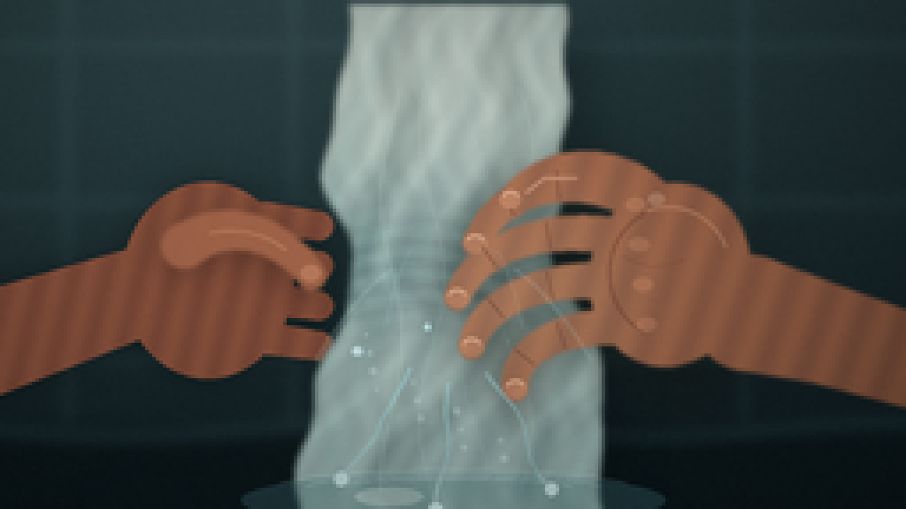
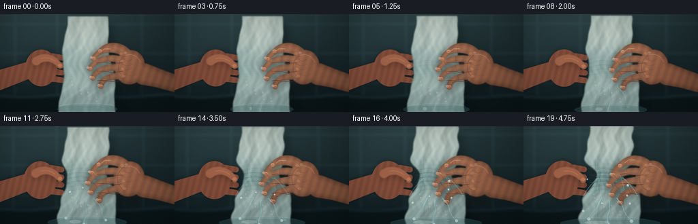
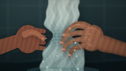

CODING AGENTS AS PIXEL WORLD MODELS
traex/DeepSeek-V4.1-Flash · phygen_012
点击播放 · 原生 RGB 像素
逐轮保存的候选
回放视频、检查图与代码变化。
每份候选均可单独播放。实际图片检查记录在下方工具轨迹中。
候选 01播放与检查图
点击播放 · 原生 RGB 像素


展开代码变化
--- 上一保存版本
+++ 本次保存版本
@@ -0,0 +1,573 @@
+from __future__ import annotations
+
+import math
+from pathlib import Path
+
+import numpy as np
+from PIL import Image, ImageDraw, ImageFilter
+
+import artifact_io
+
+
+W, H = 256, 144
+SS = 4
+RW, RH = W * SS, H * SS
+FPS = 4
+FRAMES = 20
+
+
+def s(value: float) -> int:
+ return int(round(value * SS))
+
+
+def pt(x: float, y: float) -> tuple[int, int]:
+ return s(x), s(y)
+
+
+def smoothstep(x: float) -> float:
+ x = float(np.clip(x, 0.0, 1.0))
+ return x * x * (3.0 - 2.0 * x)
+
+
+def lerp(a, b, t):
+ return a + (b - a) * t
+
+
+def cubic(p0, p1, p2, p3, n=24):
+ points = []
+ for i in range(n):
+ t = i / (n - 1)
+ u = 1.0 - t
+ x = u**3 * p0[0] + 3 * u * u * t * p1[0] + 3 * u * t * t * p2[0] + t**3 * p3[0]
+ y = u**3 * p0[1] + 3 * u * u * t * p1[1] + 3 * u * t * t * p2[1] + t**3 * p3[1]
+ points.append((x, y))
+ return points
+
+
+def tapered_polyline(points, widths):
+ left, right = [], []
+ count = len(points)
+ for i, (x, y) in enumerate(points):
+ if i == 0:
+ dx, dy = points[1][0] - x, points[1][1] - y
+ elif i == count - 1:
+ dx, dy = x - points[-2][0], y - points[-2][1]
+ else:
+ dx = points[i + 1][0] - points[i - 1][0]
+ dy = points[i + 1][1] - points[i - 1][1]
+ length = max(math.hypot(dx, dy), 1e-5)
+ nx, ny = -dy / length, dx / length
+ half = widths[i] * 0.5
+ left.append((x + nx * half, y + ny * half))
+ right.append((x - nx * half, y - ny * half))
+ return left + right[::-1]
+
+
+def draw_tapered(draw, points, w0, w1, fill):
+ widths = [lerp(w0, w1, i / max(1, len(points) - 1)) for i in range(len(points))]
+ poly = [(s(x), s(y)) for x, y in tapered_polyline(points, widths)]
+ draw.polygon(poly, fill=fill)
+ for (x, y), width in ((points[0], w0), (points[-1], w1)):
+ r = width * 0.5
+ draw.ellipse((s(x - r), s(y - r), s(x + r), s(y + r)), fill=fill)
+
+
+def rotated_ellipse(cx, cy, rx, ry, angle, n=64):
+ ca, sa = math.cos(math.radians(angle)), math.sin(math.radians(angle))
+ points = []
+ for i in range(n):
+ a = 2.0 * math.pi * i / n
+ x, y = rx * math.cos(a), ry * math.sin(a)
+ points.append((cx + x * ca - y * sa, cy + x * sa + y * ca))
+ return points
+
+
+def make_background(t: float) -> Image.Image:
+ yy, xx = np.mgrid[0:RH, 0:RW]
+ xb, yb = xx / SS, yy / SS
+
+ top = np.array([38.0, 58.0, 61.0])
+ bottom = np.array([12.0, 25.0, 29.0])
+ blend = np.clip(yb / H, 0.0, 1.0) ** 0.72
+ rgb = top[None, None, :] * (1 - blend[..., None]) + bottom[None, None, :] * blend[..., None]
+
+ # Broad window light from the upper left.
+ light = np.exp(-(((xb - 55) / 150) ** 2 + ((yb - 18) / 105) ** 2))
+ rgb += light[..., None] * np.array([16.0, 22.0, 22.0])
+
+ # A cool, softly out-of-focus tiled wall.
+ grout_v = np.exp(-((np.mod(xb + 9, 62) - 31) / 1.3) ** 2)
+ grout_h = np.exp(-((np.mod(yb + 7, 43) - 21.5) / 1.2) ** 2)
+ grout = np.maximum(grout_v * (yb < 119), grout_h * (yb < 119))
+ rgb += grout[..., None] * np.array([10.0, 15.0, 15.0])
+
+ # Dark countertop / water basin at the bottom.
+ counter = np.clip((yb - 116.0) / 10.0, 0.0, 1.0)
+ counter_color = np.array([11.0, 23.0, 26.0])
+ rgb = rgb * (1 - counter[..., None] * 0.82) + counter_color * (counter[..., None] * 0.82)
+
+ # A quiet reflected edge gives the lower area depth.
+ edge = np.exp(-((yb - 120.0 - 2.0 * np.sin(xb / 23.0)) / 1.2) ** 2)
+ rgb += edge[..., None] * np.array([20.0, 33.0, 33.0]) * (1.0 - 0.3 * t)
+
+ # Subtle, broad shadow behind the central subject.
+ shadow = np.exp(-(((xb - 130) / 90) ** 2 + ((yb - 79) / 72) ** 2))
+ rgb *= 1.0 - 0.18 * shadow[..., None]
+
+ img = Image.fromarray(np.clip(rgb, 0, 255).astype(np.uint8), "RGB")
+ return img.filter(ImageFilter.GaussianBlur(1.7 * SS))
+
+
+def towel_geometry(p: float):
+ ys = np.linspace(3.0, 147.0, 240)
+ bulge = 3.5 * p * np.exp(-((ys - 118) / 25) ** 2)
+ base_w = 66.0 + 0.18 * (ys - 46.0) + bulge
+ grip = np.exp(-((ys - (76.0 - 2.0 * p)) / (17.0 - 2.0 * p)) ** 2)
+ width = base_w - (35.0 * (p**1.25)) * grip
+ width += 1.8 * np.sin(ys * 0.25 + 0.6) * (0.35 + 0.65 * p)
+ center = 128.0 + 2.4 * np.sin(ys * 0.075 + 0.8) + 3.0 * (ys / H - 0.5)
+ center += 1.2 * p * np.sin(ys * 0.22 + 0.4)
+ return ys, center, width
+
+
+def draw_towel(base: Image.Image, p: float, t: float) -> tuple[Image.Image, np.ndarray, np.ndarray, np.ndarray]:
+ ys, center, width = towel_geometry(p)
+
+ polygon = []
+ for y, c, w in zip(ys, center, width):
+ polygon.append((s(c - w * 0.5), s(y)))
+ for y, c, w in zip(ys[::-1], center[::-1], width[::-1]):
+ polygon.append((s(c + w * 0.5), s(y)))
+
+ mask = Image.new("L", (RW, RH), 0)
+ md = ImageDraw.Draw(mask)
+ md.polygon(polygon, fill=255)
+ mask = mask.filter(ImageFilter.GaussianBlur(0.75 * SS))
+
+ shadow = Image.new("L", (RW, RH), 0)
+ sd = ImageDraw.Draw(shadow)
+ shadow_poly = [(x + s(8), y + s(10)) for x, y in polygon]
+ sd.polygon(shadow_poly, fill=118)
+ shadow = shadow.filter(ImageFilter.GaussianBlur(4.5 * SS))
+ shadow_arr = np.asarray(shadow).astype(np.float32) / 255.0
+ arr = np.asarray(base).astype(np.float32)
+ arr = arr * (1 - 0.55 * shadow_arr[..., None]) + np.array([5, 12, 14]) * (0.55 * shadow_arr[..., None])
+ base = Image.fromarray(np.clip(arr, 0, 255).astype(np.uint8), "RGB")
+
+ yy, xx = np.mgrid[0:RH, 0:RW]
+ xb, yb = xx / SS, yy / SS
+ y_idx = np.clip((yb - 3.0) / (144.0 / 239.0), 0, 239).astype(np.int32)
+ center_map = center[y_idx]
+ width_map = np.maximum(width[y_idx], 8.0)
+ u = (xb - center_map) / width_map
+ edge = np.abs(u)
+
+ grip = np.exp(-((yb - 76.0) / 20.0) ** 2)
+ wet = 0.26 + 0.25 * np.exp(-((yb - 77) / 30) ** 2) + 0.28 * np.exp(-((yb - 127) / 21) ** 2)
+ wet += 0.24 * p * grip + 0.035 * np.sin(xb * 0.45 + yb * 0.17)
+ wet = np.clip(wet, 0.15, 0.86)
+
+ dry = np.array([210.0, 219.0, 207.0])
+ soaked = np.array([67.0, 103.0, 105.0])
+ rgb = dry[None, None, :] * (1 - wet[..., None]) + soaked[None, None, :] * wet[..., None]
+
+ # Woven ribs and irregular folds, compressed toward the grip.
+ ribs = 0.5 + 0.5 * np.sin((xb - center_map) * 0.72 + np.sin(yb * 0.19) * 2.1 + 0.7)
+ folds = 0.5 + 0.5 * np.sin(u * (10.5 + 4.5 * p) + yb * 0.045 + 1.3 * np.sin(yb * 0.11))
+ fold_shadow = np.exp(-((folds - 0.06) / 0.16) ** 2)
+ fold_light = np.exp(-((folds - 0.57) / 0.18) ** 2)
+ rgb += (ribs[..., None] - 0.5) * np.array([7.0, 8.0, 7.0])
+ rgb -= fold_shadow[..., None] * (7.0 + 9.0 * p)
+ rgb += fold_light[..., None] * np.array([7.0, 8.0, 7.0])
+ rgb *= (1.0 - 0.22 * np.clip(edge, 0, 1.2)[..., None])
+ rgb *= 1.0 + 0.10 * (1.0 - np.clip(xb / W, 0, 1))[..., None]
+
+ # Saturated cloth gets broad, cool highlights.
+ sheen = np.exp(-((edge - 0.43) / 0.17) ** 2) * (0.28 + 0.55 * wet)
+ rgb += sheen[..., None] * np.array([22.0, 30.0, 28.0])
+
+ # Gather extra horizontal folds where the hands compress the cloth.
+ wrinkle = np.sin(yb * 1.05 + 2.4 * np.sin(xb * 0.12)) * np.exp(-((yb - 77) / 16) ** 2)
+ rgb += wrinkle[..., None] * (p * np.array([9.0, 11.0, 9.0]))
+
+ mask_arr = np.asarray(mask).astype(np.float32)[..., None] / 255.0
+ out = np.asarray(base).astype(np.float32) * (1 - mask_arr) + rgb * mask_arr
+
+ # Edge darkening helps the soft towel sit in the scene.
+ interior = np.asarray(mask.filter(ImageFilter.MinFilter(5))).astype(np.float32) / 255.0
+ rim = np.clip(mask_arr[..., 0] - interior, 0, 1)
+ out *= 1.0 - 0.20 * rim[..., None]
+
+ towel = Image.fromarray(np.clip(out, 0, 255).astype(np.uint8), "RGB")
+ return towel, mask, center, width
+
+
+def draw_left_hand_underlay(base: Image.Image, p: float) -> Image.Image:
+ mask = Image.new("L", (RW, RH), 0)
+ d = ImageDraw.Draw(mask)
+
+ # Forearm, wrist, and palm enter from the left and disappear behind the towel.
+ draw_tapered(d, [(-16, 102), (16, 91), (48, 80)], 30, 24, 255)
+ d.ellipse((s(37), s(52), s(84), s(106)), fill=255)
+ for y in (61, 72, 83, 94):
+ draw_tapered(d, [(60, y), (77, y + 1), (91, y + 3)], 10, 8, 255)
+
+ shadow = mask.filter(ImageFilter.GaussianBlur(4.0 * SS))
+ sa = np.asarray(shadow).astype(np.float32) / 255.0
+ arr = np.asarray(base).astype(np.float32)
+ arr = arr * (1 - 0.42 * sa[..., None]) + np.array([8, 13, 14]) * (0.42 * sa[..., None])
+
+ ma = np.asarray(mask).astype(np.float32) / 255.0
+ yy, xx = np.mgrid[0:RH, 0:RW]
+ xb, yb = xx / SS, yy / SS
+ light = np.clip(0.72 + 0.26 * (1 - xb / W) - 0.09 * yb / H, 0.58, 1.0)
+ skin = np.array([151.0, 91.0, 68.0])
+ rgb = skin[None, None, :] * light[..., None]
+ rgb += np.array([7.0, 5.0, 3.0]) * np.sin(xb * 0.7 + yb * 0.17)[..., None]
+ out = arr * (1 - ma[..., None]) + rgb * ma[..., None]
+ return Image.fromarray(np.clip(out, 0, 255).astype(np.uint8), "RGB")
+
+
+def right_hand_geometry(p: float):
+ shift = 5.5 * p
+ palm = (190.5 - shift, 78.0 - 1.0 * p, 22.0, 25.5, 11.0 + 2.0 * p)
+ forearm = [
+ (211 - shift * 0.6, 88),
+ (232 - shift * 0.3, 94),
+ (282, 110),
+ ]
+ fingers = [
+ cubic(
+ (178 - shift, 55 + p),
+ (162 - shift * 1.2, 48 + 2 * p),
+ (145 - shift * 1.3, 52 + 3 * p),
+ (137 - shift, 65 + 7 * p),
+ 28,
+ ),
+ cubic(
+ (178 - shift, 67 + p),
+ (160 - shift * 1.2, 62 + 2 * p),
+ (139 - shift * 1.3, 66 + 4 * p),
+ (132 - shift, 80 + 7 * p),
+ 28,
+ ),
+ cubic(
+ (178 - shift, 79 + p),
+ (160 - shift * 1.2, 76 + 2 * p),
+ (140 - shift * 1.3, 81 + 4 * p),
+ (136 - shift, 94 + 6 * p),
+ 28,
+ ),
+ cubic(
+ (179 - shift, 91 + p),
+ (163 - shift * 1.2, 90 + 2 * p),
+ (148 - shift * 1.3, 95 + 4 * p),
+ (148 - shift, 106 + 5 * p),
+ 26,
+ ),
+ ]
+ thumb = cubic(
+ (188 - shift, 60 + p),
+ (178 - shift * 1.2, 45 + 2 * p),
+ (158 - shift * 1.1, 43 + 3 * p),
+ (147 - shift, 55 + 5 * p),
+ 28,
+ )
+ return palm, forearm, fingers, thumb
+
+
+def draw_right_hand(base: Image.Image, p: float) -> Image.Image:
+ palm, forearm, fingers, thumb = right_hand_geometry(p)
+ mask = Image.new("L", (RW, RH), 0)
+ d = ImageDraw.Draw(mask)
+
+ draw_tapered(d, forearm, 32, 23, 255)
+ cx, cy, rx, ry, angle = palm
+ d.polygon([(s(x), s(y)) for x, y in rotated_ellipse(cx, cy, rx, ry, angle)], fill=255)
+ for finger in fingers:
+ draw_tapered(d, finger, 10.6, 7.1, 255)
+ draw_tapered(d, thumb, 13.5, 8.4, 255)
+ mask = mask.filter(ImageFilter.GaussianBlur(0.45 * SS))
+
+ # Contact shadow and a broader cast shadow make the grip convincing.
+ shadow = Image.new("L", (RW, RH), 0)
+ sd = ImageDraw.Draw(shadow)
+ for finger in fingers:
+ for x, y in finger[::5]:
+ sd.ellipse((s(x - 7), s(y - 5), s(x + 7), s(y + 10)), fill=150)
+ for x, y in thumb[::6]:
+ sd.ellipse((s(x - 8), s(y - 5), s(x + 8), s(y + 11)), fill=140)
+ sd.polygon([(s(x + 4), s(y + 7)) for x, y in rotated_ellipse(cx, cy, rx + 3, ry + 3, angle)], fill=135)
+ shadow = shadow.filter(ImageFilter.GaussianBlur(4.8 * SS))
+
+ arr = np.asarray(base).astype(np.float32)
+ sa = np.asarray(shadow).astype(np.float32) / 255.0
+ arr = arr * (1 - 0.58 * sa[..., None]) + np.array([19, 18, 13]) * (0.58 * sa[..., None])
+
+ yy, xx = np.mgrid[0:RH, 0:RW]
+ xb, yb = xx / SS, yy / SS
+ ma = np.asarray(mask).astype(np.float32) / 255.0
+ skin = np.array([183.0, 119.0, 87.0])
+ light = np.clip(0.77 + 0.28 * (1 - xb / W) - 0.11 * (yb / H), 0.63, 1.05)
+ warm = np.array([8.0, 5.0, 2.0]) * np.sin(xb * 0.55 + yb * 0.19)[..., None]
+ rgb = skin[None, None, :] * light[..., None] + warm
+ # Soft reflected light from the wet cloth.
+ reflection = np.exp(-((xb - 144) / 34) ** 2 - ((yb - 85) / 35) ** 2)
+ rgb += reflection[..., None] * np.array([8.0, 16.0, 14.0])
+ out = arr * (1 - ma[..., None]) + rgb * ma[..., None]
+
+ img = Image.fromarray(np.clip(out, 0, 255).astype(np.uint8), "RGB")
+
+ detail = Image.new("RGBA", (RW, RH), (0, 0, 0, 0))
+ dd = ImageDraw.Draw(detail)
+ for finger, tip_width in zip(fingers, (7.1, 7.1, 7.1, 6.3)):
+ # Joint creases.
+ for pos in (0.40, 0.73):
+ idx = int(pos * (len(finger) - 1))
+ x, y = finger[idx]
+ dx, dy = finger[min(idx + 1, len(finger) - 1)][0] - finger[max(idx - 1, 0)][0], finger[min(idx + 1, len(finger) - 1)][1] - finger[max(idx - 1, 0)][1]
+ ln = max(math.hypot(dx, dy), 1)
+ nx, ny = -dy / ln, dx / ln
+ r = 4.1 - pos * 0.8
+ dd.line((s(x - nx * r), s(y - ny * r), s(x + nx * r), s(y + ny * r)), fill=(92, 49, 40, 125), width=s(0.55))
+ # Curled fingertips catch a narrow warm highlight.
+ tx, ty = finger[-1]
+ dd.ellipse((s(tx - 3.0), s(ty - 2.7), s(tx + 3.2), s(ty + 2.8)), fill=(230, 164, 126, 68))
+ dd.arc((s(tx - 2.7), s(ty - 2.2), s(tx + 2.8), s(ty + 2.2)), 205, 335, fill=(255, 215, 178, 145), width=s(0.65))
+
+ # Palm and knuckle shading.
+ dd.arc((s(cx - 17), s(cy - 19), s(cx + 18), s(cy + 18)), 116, 245, fill=(92, 49, 41, 90), width=s(0.9))
+ dd.arc((s(cx - 18), s(cy - 19), s(cx + 17), s(cy + 17)), 250, 338, fill=(238, 177, 137, 72), width=s(1.0))
+ for x, y in ((178, 58), (179, 69), (180, 80), (181, 91)):
+ dd.ellipse((s(x - 2.8), s(y - 1.8), s(x + 2.8), s(y + 2.0)), fill=(235, 166, 125, 58))
+
+ # Thumb nail and crease.
+ tx, ty = thumb[-1]
+ dd.ellipse((s(tx - 3.2), s(ty - 3.6), s(tx + 2.6), s(ty + 1.5)), fill=(239, 179, 140, 75))
+ dd.arc((s(tx - 3.0), s(ty - 3.2), s(tx + 2.4), s(ty + 1.3)), 205, 330, fill=(255, 220, 183, 140), width=s(0.65))
+ dd.line((s(cx - 13), s(cy - 5), s(cx - 5), s(cy - 2), s(cx + 4), s(cy - 4)), fill=(111, 61, 48, 80), width=s(0.65))
+
+ # Wet highlights on the thumb and the most exposed knuckle.
+ dd.line((s(162), s(51), s(153), s(51), s(148), s(55)), fill=(255, 219, 181, 82), width=s(1.1))
+ dd.ellipse((s(181.5), s(55.0), s(186.0), s(58.2)), fill=(255, 228, 195, 55))
+
+ img = Image.alpha_composite(img.convert("RGBA"), detail).convert("RGB")
+ return img
+
+
+def draw_left_thumb(base: Image.Image, p: float) -> Image.Image:
+ points = cubic(
+ (53 + 2 * p, 69 + p),
+ (65 + 2 * p, 60 + 2 * p),
+ (79 + 2 * p, 64 + 3 * p),
+ (88 + 2 * p, 76 + 3 * p),
+ 22,
+ )
+ mask = Image.new("L", (RW, RH), 0)
+ d = ImageDraw.Draw(mask)
+ draw_tapered(d, points, 12.5, 8.0, 255)
+ mask = mask.filter(ImageFilter.GaussianBlur(0.55 * SS))
+
+ shadow = Image.new("L", (RW, RH), 0)
+ sd = ImageDraw.Draw(shadow)
+ for x, y in points[::4]:
+ sd.ellipse((s(x - 7), s(y - 4), s(x + 7), s(y + 9)), fill=120)
+ shadow = shadow.filter(ImageFilter.GaussianBlur(4.0 * SS))
+
+ arr = np.asarray(base).astype(np.float32)
+ sa = np.asarray(shadow).astype(np.float32) / 255.0
+ arr *= 1 - 0.45 * sa[..., None]
+ yy, xx = np.mgrid[0:RH, 0:RW]
+ xb, yb = xx / SS, yy / SS
+ ma = np.asarray(mask).astype(np.float32) / 255.0
+ skin = np.array([174.0, 110.0, 80.0])
+ light = 0.78 + 0.24 * (1 - xb / W) - 0.06 * yb / H
+ rgb = skin[None, None, :] * light[..., None]
+ out = arr * (1 - ma[..., None]) + rgb * ma[..., None]
+ img = Image.fromarray(np.clip(out, 0, 255).astype(np.uint8), "RGB")
+
+ overlay = Image.new("RGBA", (RW, RH), (0, 0, 0, 0))
+ od = ImageDraw.Draw(overlay)
+ od.line([(s(x), s(y)) for x, y in points[4:-4:2]], fill=(245, 182, 141, 62), width=s(1.0))
+ tx, ty = points[-1]
+ od.ellipse((s(tx - 3), s(ty - 3), s(tx + 2.5), s(ty + 1.5)), fill=(238, 174, 132, 75))
+ return Image.alpha_composite(img.convert("RGBA"), overlay).convert("RGB")
+
+
+def draw_towel_sheen(img: Image.Image, p: float, t: float) -> Image.Image:
+ overlay = Image.new("RGBA", (RW, RH), (0, 0, 0, 0))
+ d = ImageDraw.Draw(overlay)
+
+ # Vertical glints follow the compressed folds.
+ for i, x0 in enumerate((111, 122, 134, 145)):
+ amp = 3.0 + i * 0.6
+ points = []
+ for y in np.linspace(26, 137, 30):
+ x = x0 + amp * math.sin(y * 0.08 + i * 1.4 + t * 0.35)
+ points.append((s(x), s(y)))
+ alpha = int((24 + 26 * p) * (0.7 + 0.3 * math.sin(i * 1.7 + t * 2.2)))
+ d.line(points, fill=(205, 234, 228, max(10, alpha)), width=s(0.55 + 0.25 * p), joint="curve")
+
+ # Pressure gathers bright ridges above and below the grip.
+ for y0 in (65, 72, 80, 88):
+ x0 = 103 - 4 * p
+ x1 = 153 + 3 * p
+ pts = []
+ for x in np.linspace(x0, x1, 24):
+ y = y0 + 2.2 * math.sin((x - 128) * 0.11 + y0)
+ pts.append((s(x), s(y)))
+ d.line(pts, fill=(224, 241, 232, int(18 + 24 * p)), width=s(0.45), joint="curve")
+
+ # Fine beads on the wet cloth.
+ for i in range(13):
+ x = 104 + (i * 37) % 49
+ y = 94 + (i * 29) % 37
+ r = 0.55 + (i % 3) * 0.22
+ d.ellipse((s(x - r), s(y - r), s(x + r), s(y + r)), fill=(210, 244, 241, 60 + 5 * (i % 3)))
+
+ return Image.alpha_composite(img.convert("RGBA"), overlay).convert("RGB")
+
+
+def draw_water(img: Image.Image, p: float, t: float, frame_index: int) -> Image.Image:
+ overlay = Image.new("RGBA", (RW, RH), (0, 0, 0, 0))
+ d = ImageDraw.Draw(overlay)
+
+ # Puddle and broken reflection on the countertop.
+ puddle_w = 44 + 26 * p
+ d.ellipse((s(128 - puddle_w), s(132), s(128 + puddle_w), s(147)), fill=(63, 112, 117, 92))
+ d.ellipse((s(112 - 20 * p), s(136), s(112 + 14 * p), s(141)), fill=(169, 221, 218, 38))
+ for i in range(3):
+ rx = 25 + 14 * p + i * 8
+ ry = 2.4 + i * 1.2
+ d.arc((s(128 - rx), s(136 - ry), s(128 + rx), s(136 + ry)), 188, 352, fill=(173, 225, 222, 35 + 10 * i), width=s(0.45))
+
+ # Thin streams first appear, then strengthen into a real squeeze.
+ streams = [
+ (116.0, 103.0, -17.0, 31.0),
+ (126.5, 106.0, -1.5, 35.0),
+ (137.0, 103.0, 18.0, 32.0),
+ ]
+ for j, (x0, y0, vx, vy) in enumerate(streams):
+ strength = np.clip((p - 0.04 - j * 0.025) / 0.78, 0, 1)
+ if strength <= 0:
+ continue
+ points = []
+ for k in range(16):
+ q = k / 15
+ x = x0 + vx * q + 2.2 * math.sin(q * 8 + t * 4 + j) * q
+ y = y0 + vy * q + 1.5 * math.sin(q * 6 + j)
+ points.append((x, y))
+ for k in range(len(points) - 1):
+ q = k / (len(points) - 1)
+ alpha = int((58 + 92 * strength) * (1 - 0.45 * q))
+ width = s(0.45 + 0.8 * strength * (1 - 0.35 * q))
+ d.line((s(points[k][0]), s(points[k][1]), s(points[k + 1][0]), s(points[k + 1][1])),
+ fill=(155, 222, 226, alpha), width=max(1, width))
+ # Bright leading droplet.
+ if strength > 0.42:
+ x, y = points[-1]
+ r = 1.2 + 1.0 * strength
+ d.ellipse((s(x - r), s(y - r), s(x + r), s(y + r)), fill=(208, 245, 242, 150))
+
+ # Grip-point jets flare outward late in the sequence.
+ if p > 0.52:
+ flare = (p - 0.52) / 0.48
+ for side in (-1, 1):
+ for j in range(2):
+ x0 = 128 + side * (12 + 5 * j)
+ y0 = 71 + 5 * j
+ pts = []
+ for k in range(12):
+ q = k / 11
+ x = x0 + side * (7 + 14 * j) * q
+ y = y0 + (11 + 4 * j) * q + 10 * q * q
+ pts.append((s(x), s(y)))
+ d.line(pts, fill=(190, 237, 238, int(34 + 55 * flare)), width=s(0.45 + 0.25 * j), joint="curve")
+
+ # Deterministic droplets: births become denser as pressure climbs.
+ for i in range(46):
+ birth = 0.45 + i * 0.094 + 0.16 * math.sin(i * 2.17)
+ age = t - birth
+ if age < 0 or age > 1.25:
+ continue
+ side = -1 if i % 2 == 0 else 1
+ spread = 10 + (i * 17) % 36
+ vx = side * (8 + (i * 13) % 24)
+ vy = 25 + (i * 7) % 18
+ x = 128 + side * spread * (0.35 + 0.4 * p) + vx * age
+ y = 86 + 12 * math.sin(i * 1.3) + vy * age + 39 * age * age
+ if y > 145:
+ continue
+ streak = min(6.0, 1.5 + age * 5.0)
+ d.line((s(x - vx * 0.025), s(y - streak), s(x), s(y)), fill=(180, 232, 234, 88), width=s(0.35))
+ r = 0.7 + (i % 4) * 0.22 + 0.35 * p
+ d.ellipse((s(x - r), s(y - r), s(x + r), s(y + r)), fill=(199, 241, 241, 175))
+ d.ellipse((s(x - r * 0.55), s(y - r * 0.65), s(x + r * 0.1), s(y - r * 0.05)), fill=(250, 255, 250, 180))
+
+ # A few impact crowns near the puddle.
+ if p > 0.62:
+ for i, x in enumerate((105, 123, 145, 160)):
+ phase = (frame_index + i * 3) % 7
+ if phase in (1, 2, 3):
+ r = 1.2 + phase * 0.75
+ d.arc((s(x - r), s(137 - r * 0.5), s(x + r), s(137 + r * 0.5)), 180, 355,
+ fill=(196, 239, 238, 105), width=s(0.4))
+
+ return Image.alpha_composite(img.convert("RGBA"), overlay).convert("RGB")
+
+
+def add_finish(img: Image.Image, p: float, frame_index: int) -> Image.Image:
+ yy, xx = np.mgrid[0:RH, 0:RW]
+ xb, yb = xx / SS, yy / SS
+ arr = np.asarray(img).astype(np.float32)
+
+ # Gentle vignette and a cool-to-warm grade.
+ vignette = np.clip(1.0 - 0.28 * (((xb - 128) / 151) ** 2 + ((yb - 72) / 104) ** 2), 0.68, 1.0)
+ arr *= vignette[..., None]
+ arr[..., 0] *= 1.018
+ arr[..., 2] *= 1.012
+
+ # Sparse film grain keeps the rendered cloth from looking flat.
+ rng = np.random.default_rng(1400 + frame_index)
+ grain = rng.normal(0.0, 2.15, (RH, RW, 1)).astype(np.float32)
+ arr += grain
+ return Image.fromarray(np.clip(arr, 0, 255).astype(np.uint8), "RGB")
+
+
+def render_frame(frame_index: int) -> np.ndarray:
+ t = frame_index / (FRAMES - 1)
+ p = t**1.32
+ if frame_index == FRAMES - 1:
+ p = 1.0
+
+ img = make_background(t)
+ img = draw_left_hand_underlay(img, p)
+ img, towel_mask, center, width = draw_towel(img, p, t)
+ img = draw_towel_sheen(img, p, t)
+ img = draw_right_hand(img, p)
+ img = draw_left_thumb(img, p)
+ img = draw_water(img, p, t, frame_index)
+ img = add_finish(img, p, frame_index)
+
+ # A slow push-in and a tiny pressure tremor tighten the composition.
+ zoom = 1.0 + 0.052 * p
+ jitter_x = 0.55 * (p**3) * math.sin(frame_index * 2.1)
+ jitter_y = 0.35 * (p**3) * math.cos(frame_index * 1.7)
+ cw, ch = RW / zoom, RH / zoom
+ cx = RW * 0.5 + s(jitter_x)
+ cy = RH * 0.5 + s(jitter_y)
+ left = max(0, min(RW - cw, cx - cw * 0.5))
+ top = max(0, min(RH - ch, cy - ch * 0.5))
+ img = img.resize((W, H), Image.Resampling.LANCZOS, box=(left, top, left + cw, top + ch))
+ return np.asarray(img, dtype=np.uint8)
+
+
+def main():
+ case_dir = Path(__file__).resolve().parent
+ frames = np.stack([render_frame(i) for i in range(FRAMES)], axis=0)
+ artifact_io.save(frames, case_dir)
+ print(f"saved {len(frames)} frames to {case_dir}")
+
+
+if __name__ == "__main__":
+ main()
候选 02播放与检查图
点击播放 · 原生 RGB 像素


展开代码变化
--- 上一保存版本
+++ 本次保存版本
@@ -5,6 +5,7 @@
import numpy as np
from PIL import Image, ImageDraw, ImageFilter
+from scipy.ndimage import distance_transform_edt
import artifact_io
@@ -182,6 +183,11 @@
rgb *= (1.0 - 0.22 * np.clip(edge, 0, 1.2)[..., None])
rgb *= 1.0 + 0.10 * (1.0 - np.clip(xb / W, 0, 1))[..., None]
+ # Rounded cloth shading: a bright crown rolls off into both damp edges.
+ crown = np.sqrt(np.clip(1.0 - np.clip(u, -1, 1) ** 2, 0, 1))
+ rgb *= (0.79 + 0.22 * crown)[..., None]
+ rgb += np.clip(1.0 - xb / W, 0, 1)[..., None] * np.array([8.0, 9.0, 8.0])
+
# Saturated cloth gets broad, cool highlights.
sheen = np.exp(-((edge - 0.43) / 0.17) ** 2) * (0.28 + 0.55 * wet)
rgb += sheen[..., None] * np.array([22.0, 30.0, 28.0])
@@ -189,6 +195,16 @@
# Gather extra horizontal folds where the hands compress the cloth.
wrinkle = np.sin(yb * 1.05 + 2.4 * np.sin(xb * 0.12)) * np.exp(-((yb - 77) / 16) ** 2)
rgb += wrinkle[..., None] * (p * np.array([9.0, 11.0, 9.0]))
+
+ # Crosswise gathered pleats become clearer under the palm.
+ gathered = (
+ 0.5
+ + 0.5
+ * np.sin(yb * 2.3 + 2.0 * np.sin((xb - center_map) * 0.16) + p * 1.4)
+ )
+ gather_band = np.exp(-((yb - (78 - 2 * p)) / (20 - 4 * p)) ** 2)
+ rgb -= (gather_band * np.exp(-((gathered - 0.1) / 0.12) ** 2))[..., None] * (3.0 + 8.0 * p)
+ rgb += (gather_band * np.exp(-((gathered - 0.62) / 0.15) ** 2))[..., None] * (2.0 + 5.0 * p)
mask_arr = np.asarray(mask).astype(np.float32)[..., None] / 255.0
out = np.asarray(base).astype(np.float32) * (1 - mask_arr) + rgb * mask_arr
@@ -311,9 +327,22 @@
light = np.clip(0.77 + 0.28 * (1 - xb / W) - 0.11 * (yb / H), 0.63, 1.05)
warm = np.array([8.0, 5.0, 2.0]) * np.sin(xb * 0.55 + yb * 0.19)[..., None]
rgb = skin[None, None, :] * light[..., None] + warm
+ inside_distance = distance_transform_edt(ma > 0.35) / SS
+ skin_round = np.clip(inside_distance / 8.5, 0.0, 1.0) ** 0.58
+ rgb *= (0.70 + 0.30 * skin_round)[..., None]
+ rgb += (np.exp(-((xb - 170) / 38) ** 2 - ((yb - 56) / 18) ** 2))[..., None] * np.array([8.0, 7.0, 5.0])
+ rgb -= (np.exp(-((xb - 164) / 36) ** 2 - ((yb - 112) / 11) ** 2))[..., None] * np.array([18.0, 15.0, 12.0])
+
+ # Subtle pores and fine skin grain.
+ pore = np.sin(xb * 3.9 + np.sin(yb * 2.7)) * np.sin(yb * 3.5 + 0.8)
+ rgb += pore[..., None] * np.array([2.2, 1.5, 1.0])
# Soft reflected light from the wet cloth.
reflection = np.exp(-((xb - 144) / 34) ** 2 - ((yb - 85) / 35) ** 2)
rgb += reflection[..., None] * np.array([8.0, 16.0, 14.0])
+ for kx, ky in ((174, 63), (175, 75), (176, 87), (177, 98), (163, 53)):
+ knuckle = np.exp(-((xb - kx) / 5.2) ** 2 - ((yb - ky) / 3.5) ** 2)
+ rgb += knuckle[..., None] * np.array([11.0, 8.0, 5.0])
+ rgb -= np.exp(-((xb - kx - 2.8) / 2.2) ** 2 - ((yb - ky + 2.5) / 1.6) ** 2)[..., None] * np.array([9.0, 7.0, 5.0])
out = arr * (1 - ma[..., None]) + rgb * ma[..., None]
img = Image.fromarray(np.clip(out, 0, 255).astype(np.uint8), "RGB")
@@ -346,6 +375,29 @@
dd.ellipse((s(tx - 3.2), s(ty - 3.6), s(tx + 2.6), s(ty + 1.5)), fill=(239, 179, 140, 75))
dd.arc((s(tx - 3.0), s(ty - 3.2), s(tx + 2.4), s(ty + 1.3)), 205, 330, fill=(255, 220, 183, 140), width=s(0.65))
dd.line((s(cx - 13), s(cy - 5), s(cx - 5), s(cy - 2), s(cx + 4), s(cy - 4)), fill=(111, 61, 48, 80), width=s(0.65))
+
+ # Crevices between adjacent fingers are the strongest anatomical cue.
+ for y0, y1 in ((70.7, 71.8), (84.1, 84.8), (97.7, 98.2)):
+ pts = []
+ for x in np.linspace(143 - 2 * p, cx - 11, 16):
+ y = y0 + (y1 - y0) * (x - 143) / 36 + 0.8 * math.sin(x * 0.2)
+ pts.append((s(x), s(y)))
+ dd.line(pts, fill=(92, 48, 39, 170), width=s(0.95), joint="curve")
+ dd.line([(x, y - s(0.65)) for x, y in pts], fill=(239, 183, 146, 48), width=s(0.48), joint="curve")
+
+ # Fingertips: compact, slightly flattened nails rather than bright dots.
+ for j, finger in enumerate(fingers):
+ tx, ty = finger[-1]
+ nx, ny = tx - 2.8, ty - 1.2
+ dd.ellipse((s(nx - 2.25), s(ny - 1.7), s(nx + 2.1), s(ny + 1.8)), fill=(231, 173, 143, 145))
+ dd.arc((s(nx - 2.1), s(ny - 1.55), s(nx + 1.9), s(ny + 1.65)), 205, 330,
+ fill=(255, 223, 194, 150), width=s(0.55))
+ dd.line((s(tx - 1.4), s(ty + 1.8), s(tx + 1.4), s(ty + 2.1)), fill=(105, 55, 43, 95), width=s(0.48))
+
+ # Knuckle creases and tendon-like soft transitions across the palm.
+ dd.arc((s(181), s(55), s(194), s(69)), 28, 155, fill=(119, 66, 49, 110), width=s(0.8))
+ dd.arc((s(180), s(68), s(194), s(82)), 28, 155, fill=(119, 66, 49, 95), width=s(0.75))
+ dd.line((s(184), s(88), s(193), s(91), s(201), s(88)), fill=(113, 62, 48, 75), width=s(0.7))
# Wet highlights on the thumb and the most exposed knuckle.
dd.line((s(162), s(51), s(153), s(51), s(148), s(55)), fill=(255, 219, 181, 82), width=s(1.1))
可观测工具轨迹
实际执行的命令与返回图片。
命令 1exit 0
/bin/bash -c "pwd && rg --files -g '"'!*__pycache__*'"' -g '"'!*.pyc'"' | sed -n '1,200p'"
命令 2exit 0
/bin/bash -c "sed -n '1,240p' prompt.txt"
命令 3exit 0
/bin/bash -c "sed -n '1,260p' GENERATION_RULES.md"
命令 4exit 0
/bin/bash -c 'cat task_spec.json'
命令 5exit 0
/bin/bash -c "find . -maxdepth 2 -type f -printf '%p\\n' | sort | sed -n '1,240p'"
命令 6exit 0
/bin/bash -c "sed -n '1,260p' artifact_io.py"
命令 7exit 0
/bin/bash -c "python - <<'PY' import importlib.util for m in ['numpy','PIL','cv2','scipy','imageio','matplotlib','noise']: print(m, bool(importlib.util.find_spec(m))) PY"
命令 8exit 0
/bin/bash -c "ffmpeg -version | sed -n '1,4p'; python --version"
命令 9exit 0
/bin/bash -c 'python generate.py'
命令 10exit 0
/bin/bash -c "python - <<'PY'
from PIL import Image
for i in [0,6,12,19]:
im=Image.open(f'frames/{i:02d}.png')
im.resize((1024,576), Image.Resampling.NEAREST).save(f'.tmp/f{i:02d}_4x.png')
PY"命令 11exit 1
/bin/bash -c 'python generate.py'
命令 12exit 0
/bin/bash -c 'python generate.py'
命令 13exit 0
/bin/bash -c "python - <<'PY'
from PIL import Image
for i in [0,6,12,19]:
im=Image.open(f'frames/{i:02d}.png')
im.resize((1024,576), Image.Resampling.NEAREST).save(f'.tmp/f{i:02d}_4x.png')
PY"命令 14exit 0
/bin/bash -c 'ls -lh pixels.npz index.html inspection.png generate.py frames/00.png frames/19.png'
命令 15exit 0
/bin/bash -c "python - <<'PY'
import json
from pathlib import Path
import numpy as np
from PIL import Image
p=Path('.')
z=np.load('pixels.npz')['pixels']
frames=sorted((p/'frames').glob('*.png'))
spec=json.loads((p/'task_spec.json').read_text())
print('pixels', z.shape, z.dtype)
print('png_frames', len(frames), 'first_size', Image.open(frames[0]).size, 'last_size', Image.open(frames[-1]).size)
print('player_bytes', (p/'index.html').stat().st_size)
a=np.stack([np.asarray(Image.open(f)).astype(np.int16) for f in frames])
d=np.abs(np.diff(a,axis=0)).mean(axis=(1,2,3))
print('temporal_mean_abs_diff', 'min', round(float(d.min()),2), 'max', round(float(d.max()),2), 'mean', round(float(d.mean()),2))
print('nonblank_range', int(a.min()), int(a.max()))
assert z.shape==(spec['height'],spec['width'],spec['frames'])
assert len(frames)==spec['frames'] and all(Image.open(f).size==(spec['width'],spec['height']) for f in frames)
print('contract_ok')
PY"命令 16exit 0
/bin/bash -c 'python -m py_compile generate.py && git status --short 2>/dev/null || true'
视觉工具实际返回图片 1

视觉工具实际返回图片 2
视觉工具实际返回图片 3

视觉工具实际返回图片 4

视觉工具实际返回图片 5

视觉工具实际返回图片 6

视觉工具实际返回图片 7

视觉工具实际返回图片 8
保存候选 2 份；完成命令 16 次；可验证图片返回 8 张。原始 API 响应与完整日志保留在本地。